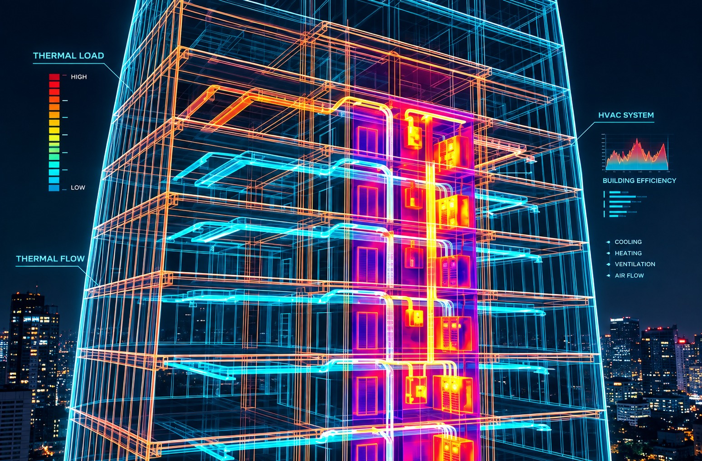

Every valve, damper, cable duct and flow pressure is tested with physical calibrated telemetry.
Fire & Electric Safety · Pan-India Statutory Diagnostics · NBC 2016 Part 4
Engineering precision
where compliance alone
is not enough.
Not a checklist. A defensible finding.
Statutory fire safety audits, high-voltage electrical risk diagnostics, and architectural egress forensics engineered to withstand regulatory, lender, and insurance cross-examination.
- Multilateral Approved
- Enterprise Client Base
- Rapid Deployment
- 150+ Specialized Audits
Statutory Accountability
The fire code was written after the fire.
AMRI. Uphaar. Kamala Mills. Disasters re-write statutory laws. In real audits, director liability is personal under the Factories & Fire Acts.
Each non-compliance explicitly binds to NBC 2016, TAC, IS 2189, or State Directorate directives.
75%+ catastrophic commercial fires trace to hidden electrical riser faults; our FLIR scans catch them cold.
Conventional Vendors
The Perfunctory Paper Checklist
Tick-box questionnaires signed by sales reps. Concealed void partitions, aging pressure valves, dry-riser leaks, and modified egress layouts pass undetected until disaster strikes.
Result: Zero statutory defense in judicial inquiry.
The EGSS Forensic Method
The Defensible Technical Finding
Physical hydro-testing, real-load busbar thermography, calibrated smoke obscuration sweeps, and photographic engineering matrices with prioritized CAPEX/OPEX fixes.
Result: Legally robust, auditor-approved, executive-defended.
Operational Matrix
What EGSS Does.
Four dedicated engineering wings architected to protect commercial towers, heavy manufacturing, and data infrastructure.
Assess & Audit
- NBC 2016 Part 4 Gap Audit
- Arc Flash & Electrical Risk
- FLIR Thermography Scans
- Passive Containment Voids
Diagnostic Field Force
Consult & Design
- Statutory Fire NOC Filing
- Emergency Response Plans
- LOTO Isolation Protocols
- Evacuation CFD Modeling
Life Safety Engineering
Test & Commission
- Hydrant Hydrostatic Flow Runs
- IS 2189 Sensor Calibration
- Diesel Pump Auto-Start Curve
- Egress Flow Time Trials
Hydro & Calibration Desk
Monitor & Review
- Annual Retainer Audits
- Forensic Incident Inquests
- TAC Underwriting Representation
- Multi-Asset Portfolio Portals
Statutory Governance

Precision Hardware Validation
NABL-Calibrated Sensor Verification.
Standard visual audits miss pressurized circuit leakage and hidden panel thermals. We deploy calibrated field instruments that quantify flow pressures, smoke obscuration curves, and busbar resistance in real-time.

Diagnostic Sensor Node
Hydraulic Pressure & Actuation Sensor
Continuous pressure loss monitoring across high-bay riser networks.
FLIR E96640×480 Thermal Optics
Pitot Tube GaugeClass 0.5 Flow Accuracy
Authoritative Standards Grid
A fire safety audit referenced against nothing is worth zero.
Every non-compliance cites standard, subsection, and defensible rectification clause.
Execution Pipeline
5-Stage Audit & Remediation.
A phased workflow moving from blueprint review to on-site testing, classified gap matrices, and continuous governance.
Scope & Brief
Occupancy taxonomy, CAD layout scans, and jurisdictional fire mandate mapping.
T-0 to 48h
Forensic Field
Hydrant flow runs, FLIR thermography scans, riser inspection, and smoke sensitivity.
Site Visit
Gap Matrix
Classified codal deviation matrix, photo evidence logs, and prioritized CAPEX/OPEX.
Red Flag 48h
Remediation
Engineering advisory, contractor rectification oversight, and statutory Fire NOC filing.
Advisory
Annual Lock
Periodic surprise verification, live drill certification, and asset portal tracking.
Continuous
Pre-Engagement Technical Clarifications
Clear Answers to Critical Objections.
We already hold a valid Fire NOC. Why do we need an EGSS audit?
A Fire NOC certifies the building as designed and handed over. It does not test what the asset does today after fit-out churn, riser modifications and ageing valves. We re-test the installed system against NBC 2016 Part 4 under real load and record the evidence a judicial inquiry or insurer will actually ask for.
Our AMC maintenance contractor already checks pumps and alarms every month.
AMC visits confirm that equipment runs. They rarely measure hydrant flow pressure at the worst-case outlet, detector obscuration sensitivity, diesel pump auto-start curves, or busbar thermals at real load. An AMC log is a maintenance record; a codal audit is a defensible finding.
Our building is a Grade-A commercial office with low hazard loads. Are we really at risk?
Grade-A stock fails on the same three vectors as everything else: concealed void partitions created during fit-outs, electrical riser and busbar faults under high-density loads, and egress routes altered after occupancy. Over 75% of catastrophic commercial fires trace to hidden electrical faults, not to occupancy class.
What is the typical turnaround for investor due diligence assessments?
Scope and brief close within 48 hours of engagement. Forensic field work is scheduled to the asset. A classified gap matrix with red-flag items is issued within 48 hours of the site visit, with the full engineering report and prioritized CAPEX/OPEX plan following the remediation consult.
Direct Technical Desk
Initiate facility scoping or technical audit.
Connect directly with our Lead Fire & Electrical Safety Engineers. No call center delays. Zero cost for preliminary scoping assessments.
- Scope response within 4 business hours
- Standard Mutual NDA executed upon request
- Hubs: Gurugram, Mumbai, Bengaluru, Chennai